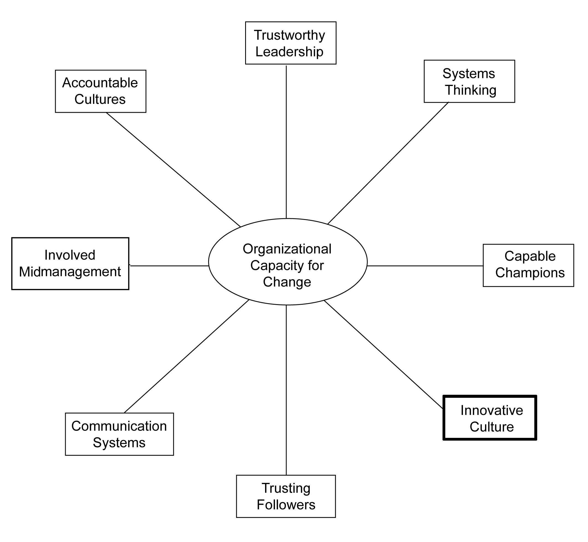

The achievement of excellence can only occur if the organization promotes a culture of creative dissatisfaction.
Lawrence Miller
Everything that can be invented has been invented.
Charles H. Duell, Director of U.S. Patent Office, 1899
Organizations in all developed economies (and increasingly many developing economies) want to be innovative. While cost control, cost parity, or both are important to be competitive, organizations in developed economies simply cannot compete with the low cost advantages that developing economies offer. As a result, more and more organizations voice or attempt to embrace the 21st-century mantra, “Innovate or die.”Peters (2006).
Many people equate creativity with innovation, and while this is understandable it is also a mistake. Creativity is the process of generating something new; while innovation is the application of creativity to a new product or service that has value. Product innovations add direct value to customers; process innovations add indirect value to customers by lowering costs, increasing the quality of new or existing products, or both. Value is generated by taking a creative new idea and moving it through a series of stages in order to yield a practical new innovation. Therefore, creativity is a necessary, but not sufficient condition for innovation.
Another misconception about innovation is that it is effortless and just happens. The philosopher Plato observed that “necessity is the mother of invention.” This observation suggests that problems are the stimulus for creativity and innovation and that persistence is required. Perhaps this is why T. S. Eliot, the highly creative American writer, stated, “Anxiety is the hand maiden of creativity”; and Andy Grove, the highly successful CEO who guided the Intel Corporation through an amazing streak of innovative activity, insists that “only the paranoid survive.”Grove (1996). In sum, creativity and innovation are essential for just about any organization today, but they are different concepts and neither comes easily.
In this chapter, I argue that the key to making an organization innovative is to cultivate an innovative culture, our eighth and final dimension of organizational capacity for change. There are many reasons why creative ideas and innovative projects are killed within organizations. Notably, almost all of them have to do with an overweighting of the risks to existing operations, and an underassessment of the returns associated with new ideas based on the overarching organizational culture. Clearly, not all ideas should be pursued and the pursuit of new ideas needs to be selective. However, very few organizations know how to fully explore new ideas and develop the best ideas into innovative new ventures. Perhaps that is why the stock market values Apple so highly, due to its rare ability to keep coming up with a steady stream of innovative new products and services year after year.
“The creative process is social, not just individual, and thus forms of organization are necessary. But elements of organization can and frequently do stifle creativity and innovation.”Florida (2002), p. 22. Organizational cultures become creative and innovative when they encourage “combinatorial play.”Shames (2009). In other words, employees need to imaginatively combine ideas in new ways and then play with them to see how the new combination works in reality. In most organizations, however, imagination and play are not valued, getting work done on time and under budget is; pursuing ideas with unproven merit is frowned upon; and extrinsic rewards are emphasized over intrinsic rewards. All of these traditional cultural norms and values thwart the development of innovation since creative employees usually value imagination and play and pursuing new ideas into unknown realms, and are highly motivated by intrinsic rewards.
A second aspect of organizational culture that is fundamental to creativity is the cultivation of diversity of thought. Although many organizations pay lip service to the need to diversify their workforce, diversity of observable demographic traits is typically the emphasis, not diversity of thought. When the workforce is highly diverse, then misunderstandings are likely, conflict often ensues, and productivity can decline. Clearly, none of these outcomes is a pleasant experience and they do not automatically lead to innovations. However, if diversity of thought is welcomed in an organizational culture, creativity and innovation are more likely.Basset-Jones (2005).
A third aspect of organizational culture that can facilitate innovation is the ubiquity of weak ties. Strong ties are relationships we have with family members, close friends, and longtime neighbors or coworkers. They tend to be ties of long duration, marked by trust and reciprocity in multiple areas of life. In contrast, weak ties are those relationships that are more on the surface—people we are acquainted with but not deeply connected to. Research has shown that creative individuals have many “weak ties” inside and outside their work organizations.Granovetter (1973). Consequently, organizational cultures that encourage flexible working conditions and external networking make innovation more likely. Hence, there is a spontaneous and serendipitous aspect to innovative cultures.
A fourth aspect of organizational culture that nurtures creativity and innovation is an organization-wide ability to look long term. Today’s organizations are very lean and short-term focused. They are so busy exploiting existing markets, they don’t have the time or resources or capacity to explore new markets. However, organizational cultures that enable the organization to both exploit and explore markets make it possible for its leaders to “fly the plan while rewiring it.”Judge and Blocker (2008).
A fifth aspect of organizational culture that makes creativity and innovation possible is the tolerance of ambiguity and failure. As Woody Allen states, “If you are not failing every now and again, it’s a sign you’re not doing anything very innovative.” Clearly, not all new ideas will work out as hoped, so ideas that lead to dead-ends are an inevitable part of the innovation process. Unfortunately, most organizational cultures seek to blame individuals who fail, rather than accepting occasional failures and attempting to learn from the experience.
A sixth aspect of organizational culture stems from the reality that most innovations come from collaboration within and across teams, not the genius or perseverance of a single individual. For example, in a scientific study of R&D units in the biotechnology industry, Judge and associates found that the most innovative units operated more like goal-directed communities than as a collection of big-name scientists.Judge, Fryxzell, & Dooley (1997). Nonetheless, many organizations seek to hire employees who are extremely intelligent, come from prestigious universities, or both, and these are often the individuals who have the most problems collaborating with others.
Some executives believe that the key to being innovative is all about investing heavily in a Research and Development unit; others argue that all innovation stems from hiring the right leaders; still others assert that innovation is largely a matter of luck and serendipity. However, the research consensus is that organizational culture is the primary source of comprehensive and sustained innovation.Garvin (2004). The primary reason for this is that innovation is a teachable discipline that involves many different people in collaboration.Drucker (1993).
There is a wide variety of cultural typologies in the organizational sciences, but one of the most popular is the “Competing Values” framework advanced by Kim Cameron and Robert Quinn. According to these authors, there are four classical types of organizational cultures: (a) hierarchy, (b) market, (c) clan, and (d) adhocracyA type of organizational culture that is most conducive to innovation because it emphasizes flexibility and discretion over stability and control, and external differentiation over internal integration.. These four organizational cultures vary in their relative emphasis on flexibility and discretion bestowed upon individuals and their external focus on variation and differentiation. The “adhocracy” culture is reported to be the one cultural type that is most conducive to innovation since it emphasizes flexibility and discretion over stability and control and external differentiation over internal integration.Cameron and Quinn (1999).
As Cameron and Quinn point out, some cultures are more open to innovation and change than others, but the reason for this is that there are competing values tugging the culture in multiple directions. The “hierarchyA type of organizational culture that places an emphasis on control, accountability, and stability, and that limits the overall capacity for change.” culture, with its inward integration coupled with a stability and control focus, is the exact opposite of the adhocracy culture. Indeed, hierarchical cultures are useful for addressing matters of accountability, as discussed in the previous chapter. However, too much emphasis on control and an overly inward focus will limit the overall capacity for change of the organization. In sum, there must be a balance struck between innovation and accountability for those organizations that seek to expand their capacity for change.
Innovation is fostered by information gathered from new connections, from insights gained by journeys into other disciplines or places; from active, collegial networks and fluid open boundaries. Innovation arises from ongoing circles of exchange, where information is not just accumulated or stored, but created.Wheatley (2006), p. 113.
Clearly, the more open the culture is to new ideas and connections, the more likely that it will be innovative and capable of change.
In 2004, Fast Company magazine nominated W. L. Gore and Associates as “pound for pound, the most innovative company in America.” They argued that their impressive string of innovations were a direct result of their culture, which was designed specifically to be innovative. What is striking is how nonhierarchical Gore’s culture is. For example, they emphasize the power of small, interdisciplinary teams over formal organizational structure. There are no ranks, no titles, and no bosses to report to. The firm takes the long view as much as possible; and it emphasizes the importance of face-to-face communication. Associates are encouraged to spend up to 10% of their time pursuing speculative new ideas. And the culture celebrates failure in order to encourage risk taking.Deutschman (2004).
Similar to previous chapters, we conclude this chapter with a discussion of seven practices that can be used to enhance your organization’s capacity for change in this particular area.
In too many organizations, innovation is assumed to be the responsibility of the top management team, or the research and development unit.Hargadon and Sutton (2000). While these two groups of people are essential, this emphasis will fail to capture the “wisdom of the anthill.”Hamel and Prahalad (1994). Innovation is essentially a collaborative endeavor, where collective imagination yields new business opportunities.Hammer (2004).
According to Peter Drucker, innovation and entrepreneurship are capable of being presented as a discipline. In other words, it can be learned and practiced. Most important for us in this chapter, Drucker asserts that it can be fostered and encouraged throughout an entire organization.Drucker (1996). One of the keys appears to be to create a collaborative, “information-rich” environment in which all employees are invited to contribute.Kanter (2006). Commenting on the success of the Sundance Film Festival, Robert Redford stated, “If you create an atmosphere of freedom, where people aren’t afraid someone will steal their ideas, they will engage with each other, they will help one another, and they will do some amazingly creative things together.”Zades (2003), p. 67.
All innovation depends on the generation of new ideas, but no new ideas will be generated in the absence of human creativity. Consequently, the hiring process needs to emphasize the importance of selecting individuals who have creative potential. More importantly, the human resources system needs to focus on developing that creativity and retaining individuals who show creative promise.Mumford (2000).
However, creative individuals aren’t the only ones required to cultivate a more innovative culture. Other individuals, such as “knowledge brokers,” are also essential. Knowledge brokersIndividuals who collect ideas and combine them in unique and valuable ways. They are skilled at cultivating a more innovative organizational culture by keeping new ideas alive. are individuals who constantly collect ideas and combine them in unique and valuable ways. They often are not the originators of the ideas, but they have a skill at keeping new ideas alive and seeing where they lead. Hargadon and Sutton (2000). Sometimes older workers lose their creative spark but serve as knowledge brokers to keep the spark alive.
Most organizations are uncomfortable with “mavericks” who shake up the status quo and display irreverence for accepted wisdom. However, mavericksIndividuals who play a vital role in making an organization more innovative; they are typically independent thinkers who do not embrace the status quo. play a vital role in making an organization more innovative, especially larger organizations.Stringer (2000). For example, Jack Welch, a relatively famous maverick who led General Electric through a very innovative period, stated, “Here at GE, we reward failure.”Farson and Keyes (2002). Indeed, there is scientific research that demonstrates that when the reward system recognizes and retains creative employees, the organization behaves more innovatively.Chandler, Keller, & Lyon (2000).
A popular but controversial mantra in innovative organizations is “fail fast, fail cheap.” The idea here is that it is important to get your new ideas in rough form out into the marketplace, and learn from your customers. This is in contrast to the “go–no go” approach where companies want new ideas to be 95% right before taking any action.Hall (2007). Perhaps this is why IBM’s Thomas Watson, Sr., once said, “The fastest way to succeed is to double your failure rate.”Edmondson (2002), p. 64.
However, fast and cheap are not enough; the innovative organization also needs to learn from the experience in order to make the “failure” pay off. This is where testing comes in. Hence, a key ingredient to becoming more culturally innovative is the importance of designing relatively small-scale, but rigorous tests or “experiments.” For example, Capital One, a highly successful retail bank, was founded on experimental design where new ideas were constantly tested. Tests are most reliable when many roughly equivalent settings can be observed—some containing the new idea and some not.Davenport (2009). Similarly, IDEO, perhaps the most innovative design firm in the world, is a staunch proponent of encouraging experimenters who prototype ideas quickly and cheaply.Kelley and Littman (2005). In sum, innovative cultures fail fast and fail cheap and learn from their failures.
Organizations operate in increasingly competitive environments. The concept of “winning” is an important one, and being labeled a “winner” is usually a key to organizational advancement. Unfortunately, failure is an integral part of innovation, so innovative cultures need to create the psychological safety whereby failure in certain circumstances is acceptable.Edmondson (2008).
Some mistakes are more lethal than others, so mistakes that do not jeopardize the survival of the organization need to be accepted, even welcomed by leaders. Relatedly, it is more important to focus on the ideas rather than the individuals behind the ideas so that failure is not personalized. And “failure-tolerant leaders emphasize that a good idea is a good idea, whether it comes from Peter Drucker, Reader’s Digest, or an obnoxious coworker.”Farson and Keyes (2002), p. 70.
Once again, the human resources system can be instrumental in helping to create the psychological safety to enable innovation. In this case, the system can be designed to permit and even celebrate failure.Bowen and Ostroff (2004). Clearly, this involves a balancing act between rewarding success and tolerating failure. Consequently, the key is to create sufficient psychological safety within a culture so that the organization can “dance on the borderline between success and failure.”Wylie (2001).
In the 1970s and 1980s, many organizations tried to create specialized subunits where their mandate was to make the organization more innovative. This structural approach to innovation largely failed, either immediately or in the long term. For example, General Motors created the Saturn division as a built-from-scratch innovative new way to produce and sell cars. At first, Saturn had spectacular success. However, the lessons learned from Saturn never translated to the rest of the organization and recently the Saturn division was eliminated.Hanna (2010). Similarly, too many large organizations try to rely solely on their research and development units for innovation, which greatly constrains the idea production and development process.Stringer (2000).
Innovation is clearly a team sport, one that should pervade the entire organization. As a result, ad hoc interdisciplinary teams appear to be the proper structural approach to fostering innovation. Today, IDEO is one of the most innovative firms in the world, and their approach to business is centered around interdisciplinary teams.Kelley and Littman (2005). In sum, the ad hoc interdisciplinary team appears to be the structural solution to innovation, not a self-contained innovative subunit as some suggest.
Recall from the previous chapter that one key way to change a culture is to intentionally shift the cultural artifacts in the direction of the desired change. When creativity and innovation is desired, it is important to be more flexible in the work environment. So flexibility in working arrangements, dress codes, and organizational titles becomes important.
New myths and rituals are required that focus on creativity and innovation. For example, some organizations celebrate failed experiments based on imaginative new ideas. Other organizations promote individuals who took a risk on a promising new idea that did not work out. And changing the formal values statement to incorporate an explicit statement about creativity and innovation highlights its new importance. Still others change the metaphors used in the organization. For example, creating a “blank canvas” culture evokes an image of artists operating without artificial constraints.
Fundamentally, cultures are not changed by new thoughts or words, they are changed by new behaviors that reinforce the cultural attributes that are desired. For example, GM’s automobile plant in Fremont, California, transformed its culture by adopting the lean manufacturing behaviors advocated by its new venture partner, Toyota Motors. For example, nothing was as transformative at this particular plant as the “simple” act of empowering frontline employees to stop the productive line at any time due to quality concerns. This new policy had dramatic impacts on the revitalization of this unionized plant.Shook (2010).
Culture change does not occur until the underlying assumptions that pervade the organization are challenged and replaced with some new assumptions. Therefore, ordering new behaviors isn’t enough. The organization must thoughtfully identify what the old assumptions are and work to instill new assumptions that support the culture desired. Consequently, contemplation and reflection are essential to any culture-change initiative. Perhaps this is why Gary Hamel and C. K. Prahalad note that “true strategy is the result of deep, innovative thinking.”Hamel and Prahalad (1994), p. 56.
Some observers call for “disciplined reflection”;Edmondson (2008). while others urge leaders to identify “constraining assumptions.”Hammer (2004). Whatever the term that is used, organizational members need to think deeply about where their culture limits innovation, and to identify what cultural assumptions are the limiting factor. This requires a collective perspective; very rarely can a single leader come to this realization. Since most organizations have a bias for action, this reflection can be especially difficult. However, organizational learning often requires unlearning old and harmful assumptions and this is especially true for cultivating innovativeness.Senge (1990).
In conclusion, the eighth and final dimension of organizational capacity for change is an innovative culture that fosters and celebrates creativity and innovation. This dimension is an essential counterbalance to accountability systems. Together, these two dimensions complete our understanding of how to make your organization more change capable.
Figure 10.1 The Eighth Dimension of Organizational Capacity for Change: Innovative Culture
